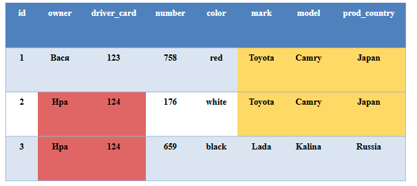
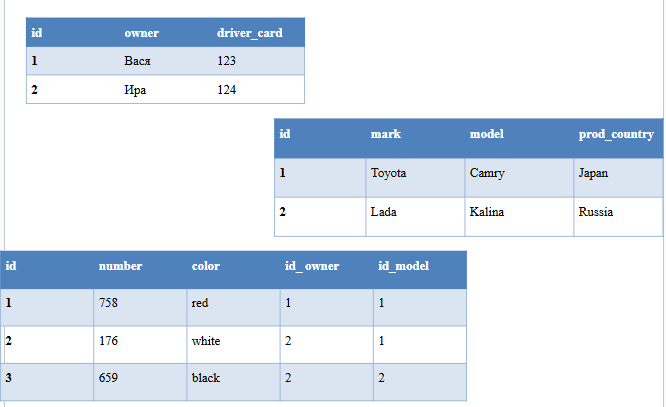
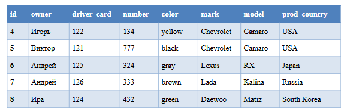

Введение в базы данных и SQL. Часть 2
На позапрошлом занятии мы начали учиться создавать базы данных, но мы говорили, что эти базы данных являются простыми. Сегодня мы будем разговаривать о более сложных базах данных, которые называются реляционными базами данных
Зачем нужно что-то придумывать, если и так работает? Посмотрите на картинку ниже, если обратить внимание на выделенные области, можно заметить, что некоторые данные в таблице повторяются, так у водителя Иры есть две машины и ее имя и номер прав присутствуют дважды, то же c машиной Toyota

В такой ситуации и нужны реляционные базы данных, вместо того, чтобы записывать всю информацию в одну таблицу и тем самым дублировать информацию, мы можем разделить всю информацию между несколькими таблицами. Для этого примера это будет три таблицы владельцы, машины и модели

Мы можем заметить, что в этих таблицах вместо дублирования информации мы даем подобие ссылки на запись в другой таблице с помощью id_owner и id_model. Такие поля-ссылки, которые ссылаются на записи в другой таблице называются внешними ключами или foreign keys. Они обозначаются после объявления всех полей.
ссылка на редактор
Задание 1. С помощью онлайн редактора SQL, создайте таблицу owners из примера выше
она будет содержать три поля (id, owner, driver_card)
Далее создайте таблицу models из примера выше
она будет содержать четыре поля (id, mark, model, prod_country)
И наконец создайте таблицу cars
она содрежит пять полей (id, number, color, id_owner, id_model)
Также нам нужно добавить два внешних ключа для полей id_owner и id_model, с помощью синтаксиса:
FOREIGN KEY (имя_столбца_в_текущей_таблице) REFERNCES имя_таблицы (имя_столбца)
Имя_стобца - это имя столбца в таблице, на которую мы ссылемся
Этот код пишем сразу после объявления столбцов в блоке CREATE
Задание 2. Наполните таблицу значениями как на рисунке выше
Обратите внимание, что таблицу cars мы будем заполнять в последнюю очередь, потому что она содержит ссылки (внешние ключи) на значения в других таблицах
Задание 3. С помощью select проверьте, что все получилось
Задание 4. Добавьте новые записи в наши таблицы, ориентируясь на рисунок ниже
Нужно понять, какие значения мы должны добавить и в какие таблицы

Теперь, когда наши данные расположены в разных таблицах, мы можем объединять их обратно по внешнему ключю в запросе SELECT.
Для этого в уже знакомом нам запросе select прописываем, что мы берем все данные из всех трех таблиц, перечисляя их через запятую. И добавляя в запрос WHERE, который обозначает где объединять таблицы после которого мы прописываем способ объединения.
Пример кода, попробуйте его выполнить в редакторе:
SELECT cars.number, cars.color, owners.owner, models.mark FROM cars, owners, models
WHERE cars.id_owner=owners.id and cars.id_model=models.id
Задание 5. Выведите таблицу, в которой содержатся имя владельца, номер и модель машины
Введите запрос в поле ниже:
Используя Where мы также можем запрашивать конкретные для нас данные, например если владелец машины Виктор. Данный запрос к БД выдаст нам только записи с владельцем Виктор:
SELECT cars.number,cars.color,owners.owner,models.mark
FROM cars, owners, models
WHERE cars.id_owner-owners.id and cars.id_model-models.id and owners.owner =
"Виктор"
Задание 6. Сделать запрос из предыдущего задания, который выдает все машины с маркой Chevrolet
Введите запрос в поле ниже: